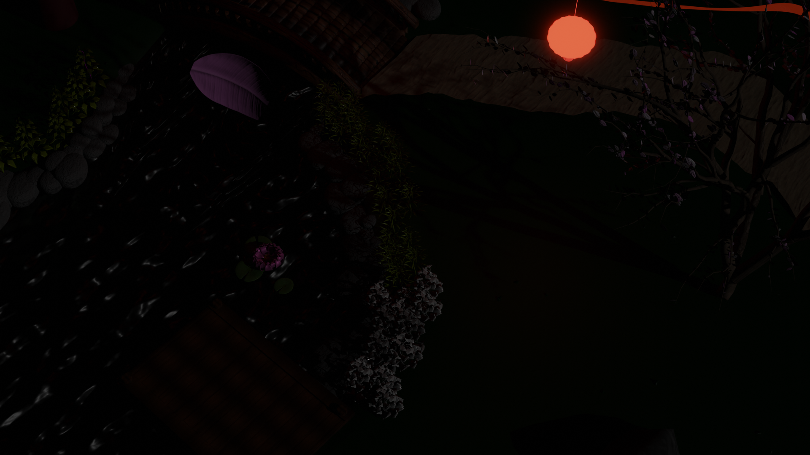

Einleitung:
Möchtest du Geburtstagswünsche verteilen oder möchtest für dich ein Geburtstagsvideo erstellen. Dann
ist der Happy B-Day-Filter genau richtig für dich. Der Filter besteht aus zwei Illustrationen. Zum
einen hat man auf der Stirn ein „Happy Birthday“ Schriftzug und zum anderen ein schlichten weißen
Rahmen mit einer Konfetti-Tüte.
Wie startet man den Filter ?
Der Filter bedarf keiner Startfunktion. Jedoch wenn der User den Konfetti-Regen starten möchte muss
der Anwender auf den Bildschirm tippen.
Welche Interaktionen gibt es?/ Wie bedient man den Filter?
Wie schon erwähnt kann der User durch das Tippen auf den Bildschirm ein Konfetti-Regen auslösen.
Tippt der User erneut auf den Bildschirm stoppt der Konfetti-Regen.
Eine weitere Interaktion ist es, wenn der Nutzer seinen Mund öffnet wird eine Happy-Birthday-Melodie
gespielt.
